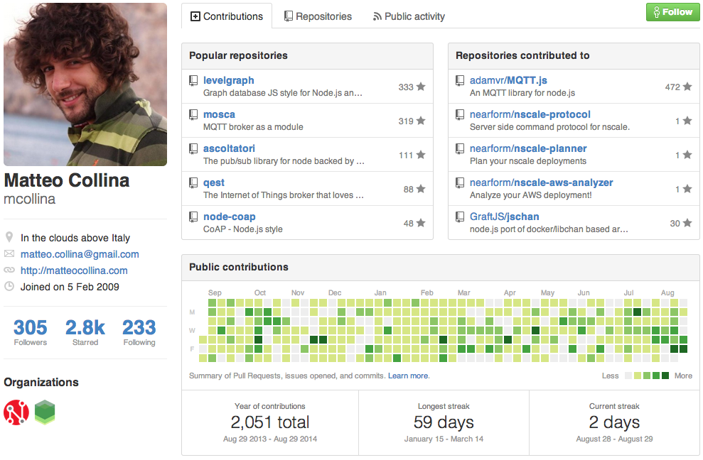

Full-Stack Through Microservices
@matteocollina
.pipe(service).pipe(another)
Where do we come from?
a brief history of distributing services
Remote
Procedure
Call

SUN's RPC, basis of NFS

RMI
Dnode
var dnode = require('dnode');
var server = dnode({
replace: function (s, cb) {
cb(s.replace(/[aeiou]{2,}/, 'oo').toUpperCase())
}
});
server.listen(5004);
Takeaways
- request/response pattern
- built on streams
- JSON message format
- works from the browser, too!
- data must be ready before calling the RPC
- no live feed, 'no realtime'
R
E
S
T
Takeaways
- Most of the time not used under Roy's guidelines
- A much nicer version of RPC?
- No live feed (Server-Sent Events?)
- Is WebSocket REST?

instead of pretending everything is a local function even over the network (which turned out to be a bad idea), what if we did it the other way around? Pretend your components are communicating over a network even when they aren't.Solomon Hykes - @solomonstre
LibChan
- Built in Go
- future basis of Docker
- SPDY all the things!
- Like Go Channels over the Network
- MsgPack all the things!
- unidirectional
Unidirectionality
- means that you send a request
- and you cannot have a response
- ... really??
- you can send a return Channel
- or 42.
- automatic binary stream support
jsChan
- node.js and browser* support
- a Channel is a Transform
- you manipulate channels via through
- each MicroService is just a through away
- SPDY, or Websocket
var session = jschan.spdyClientSession({ port: 9323 })
var sender = session.WriteChannel()
var cmd = {
Args: process.argv.slice(3),
Cmd: process.argv[2],
StatusChan: sender.ReadChannel(),
Stderr: process.stderr,
Stdout: process.stdout,
Stdin: process.stdin
}
sender.write(cmd)
var server = jschan.spdyServer();
server.listen(9323);
function handleReq(req) {
// see next slide
}
function handleChannel(channel) {
channel.on('data', handleReq);
}
function handleSession(session) {
session.on('channel', handleChannel);
}
server.on('session', handleSession);
function handleReq(req) {
var child = childProcess.spawn(
req.Cmd,
req.Args,
{ stdio: ['pipe', 'pipe', 'pipe'] }
);
req.Stdin.pipe(child.stdin);
child.stdout.pipe(req.Stdout);
child.stderr.pipe(req.Stderr);
child.on('exit', function(status) {
req.StatusChan.write({ Status: status });
});
}
What can we send on a Channel?
- Anything that you can serialize as JSON
- Node.js binary streams (Readable, Writable, Duplex)
- Other Channels
jsChan supports Backpressure

Full-Stack Through MicroServices
Full-Stack Through Microservices
var graft = require('graft')()
var through = require('through2')
graft.pipe(through.obj(function(req, enc, done) {
// your microservice goes here
this.push(req) // eventually
done() // always remember!
}))
A simple adder service
var through = require('through2');
module.exports = function build() {
return through.obj(function(msg, enc, cb) {
var result = msg.a + msg.b;
msg.returnChannel.end(result);
cb();
}));
}
Calling it locally
var graft = require('graft')();
var adder = require('./adder');
var ret = graft.ReadChannel();
graft.pipe(adder())
graft.write({
a: 2,
b: 2,
returnChannel: ret
});
ret.on('data', console.log);
Exposing it
(at the end of the adder.js file)
if (require.main === module) {
require('graft/spdy')
.server({ port: 3001 })
.on('ready', function() {
console.log('Added listening on port', 3001);
})
.pipe(module.exports());
}
Accessing the Channel and Session
graft.pipe(through.obj(function(req, enc, done) {
console.log(req._channel);
console.log(req._session);
this.push(req) // eventually
done() // always remember!
}))
Calling it remotely
var graft = require('graft')();
var spdy = require('graft/spdy');
var ret = graft.ReadChannel();
graft.pipe(spdy.client({ port: 3001 }));
graft.write({
a: 2,
b: 2,
returnChannel: ret
});
ret.on('data', console.log);
Orchestration
var graft = require('graft')();
var spdy = require('graft/spdy');
var ws = require('graft/ws');
ws
.server({ port: 3000 })
.pipe(graft)
.where({ cmd: 'add' }, spdy.client({ port: 3001 }))
// pipe or where() to more services
Todo List
- lots of testing
- service discovery?
- more transports
- examples for authentication
- HTTP/REST support
- lots of feedbacks from you
Graft and jsChan Team
http://github.com/GraftJS/graft
- Adrian Roussow
- Peter Elger
- Matteo Collina
